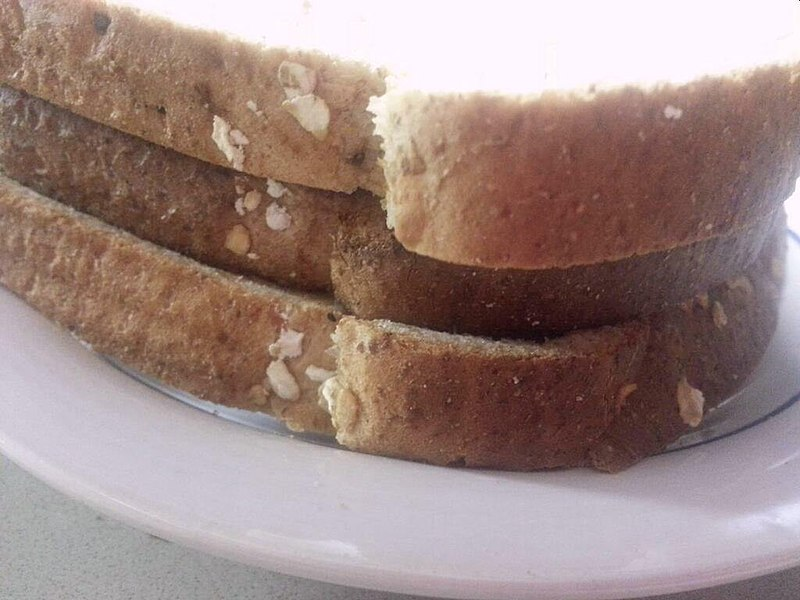

Toast Sandwich

A slice of toast between two slices of bread for reasons.
Ingredients
- 2 slices of bread
- 1 slice of toasted bread
- Some butter. Or, more likely, the world's worst margarine
Steps
- You should already have toasted some bread. If not, do that now, while questioning your life choices in following this recipe
- Butter the bread. Or put the thinnest layer of margarine possible across it
- Put toast between slices of bread
- Eat before the last traces of warmth have gone. From the sandwich and your soul